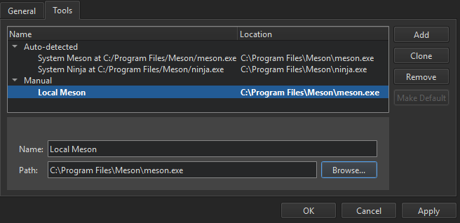
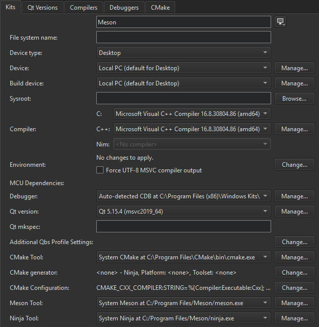

Meson
Meson is an open source and multi-platform build system generator using Ninja as main backend. Build definitions are located in meson.build files while build options are located in meson_options.txt.
Note: Many features available with Meson build or usually available from Qt Creator are missing.
Qt Creator automatically detects the Meson and Ninja executables specified in the PATH. You can add paths to other Meson or Ninja executables and use them in different build and run kits.
Note: Enable the Meson plugin to use it.
Adding Meson Tools
Qt Creator does not have strong requirements on Meson build's version, any version above 0.49.0 should be compatible.
To specify paths to Meson or Ninja executables:
- Select Preferences > Meson > Tools > Add.

- In the Name field, specify a name for the tool.
- In the Path field, specify the path to the Meson or Ninja executable.
- Select Apply to save your changes.
Select the Preferences > Kits > Kits tab to add the Meson and Ninja tools to a build and run kit:

For more information, see Kits.
Editing Meson Build Descriptions
To open a meson.build file for editing, double-click it from project tree. Only plain text editor is available now.
Code Completion and External Libraries
Through external libraries, Qt Creator can support code completion and syntax highlighting as if they were part of the current project or the Qt library.
Qt Creator handles code completion from compilation flags in Meson introspection data. Any external library added with dependency() or found in include path will be known by Qt Creator for code completion.
Syntax completion and highlighting work once your project configures successfully.
Current Meson Support Limitations
The following features are not supported yet:
- Showing header files in project tree.
- Configuration change detection, for example when building triggers a Meson configuration first.
- Actions from locator such as searching or triggering builds.
- Adding files to Meson projects from Qt Creator.
See also Enable and disable plugins, Open projects, Meson Build Configuration, and Specifying Run Settings.